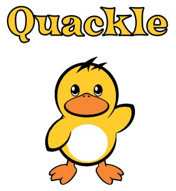
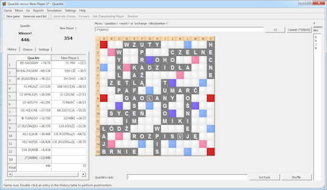
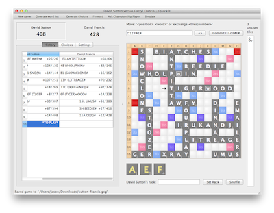
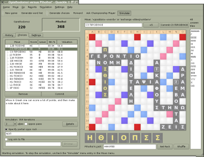
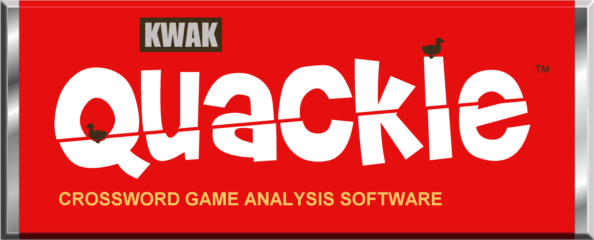

|  |
Free crossword game artificial intelligence and analysis tool that rivals the best players in the world! Download now |
29 November 2014 — Quackle Version 0.98 Released

New Features in Quackle 0.98
- Slovak dictionary!
- Polish dictionary!
- Norwegian dictionary!
- Color themes!
- Easier board configuration based on the mathematics of symmetry!
- Better behavior with international keyboards.
- Fixes for OS X Mavericks.
Contact Quacklers
Quackle is brought to you by Jason Katz-Brown (jasonkatzbrown at gmail.com), John O'Laughlin (olaughlin at gmail.com), John Fultz (jfultz at wolfram.com), Matt Liberty (matt.liberty at gmail.com), and Anand Buddhdev (arhbkb at gmail.com).
If you want to be alerted of future Quackle announcements or join in Quackle's development, please join the Quackle Yahoo! group.
2 January 2012 — Quackle Version 0.97 Released

[All packages updated on 3 January at 2pm PST to fix some spacing and crashing issues.]
New Features in Quackle 0.97
- Collins Scrabble Words 2012
- Bugfix: +5 on an outplay no longer causes a crash.
- Bugfix: Score for unused tiles is no longer counted twice in endgame simming.
A huge thankful shout-out to Anand Buddhdev for helping get this release out the door and packaging Quackle 0.97 for Mac OS X.
23 July 2008 — Quackle Version 0.96 Released

(Click image to enlarge) (Old screenshots)
(you should only need one of the below files)
- Download Quackle for Microsoft Windows: quackle-0.96-windows-installer.exe
Just double-click the downloaded file to start the installer.
- Download Quackle for Mac OS X: quackle-0.96-macosx-intel.dmg
Open the disk image (.dmg) and copy the Quackle folder to your Applications folder. If you like, drag the Quackle program's icon to your dock. Once you have copied Quackle to your Applications folder, you no longer need the disk image.
- Download Quackle for Debian-based linux systems: quackle-0.96-1.i386.deb
- Developers and Unix users only:
- Download Quackle source code (requires Qt 4.2 or later to compile): quackle-0.96-source.tar.gz
See README for compilation instructions and README.Windows if you will compile on Microsoft Windows.
New Features in Quackle 0.96
- Specify partial opponent rack during simulation.
- Endgame solver generates a list of the top moves, instead of only the single best one.
- Add 5-point challenges to especially swinging moves. Boo-yah.
- Dapperly improved simulation details dialog that includes bingo likelihood on future turns.
- Forward/Backward commands to easefully traverse completed games.
- British words can optionally be marked with # and colored red on the gameboard. (Check out the new "Settings" menu to disable this feature.)
- Play Scrabble in Greek. Mad thanks to Dorian Lidell.
- Bethwack computer players into giving you an answer right now.
- Add and view positional notes that are saved in the gcg file.
- On Windows, click on a .gcg file to open it with Quackle.
- Load and save gcg files that include mis-scored plays gracefully.
- Updated French ODS5 dictionary.
7 February 2007 — Quackle Version 0.95 Released
Downloading Quackle 0.95
(you should only need one of the below files)
- Download Quackle for Microsoft Windows: quackle-0.95-windows-installer.exe
Just double-click the downloaded file to start the installer.
- Download Quackle for Mac OS X: quackle-0.952-macosx-intel.dmg OR quackle-0.95-macosx-ppc.dmg
Mac Intel packaged UPDATED to support Leopard! Open the disk image (.dmg) and copy the Quackle folder to your Applications folder. If you like, drag the Quackle program's icon to your dock. Once you have copied Quackle to your Applications folder, you no longer need the disk image.
- Developers and Unix users only:
- Download Quackle source code (requires Qt 4.2 to compile): quackle-0.95-source.tar.gz
See README for compilation instructions and README.Windows if you will compile on Microsoft Windows.
Changes in Quackle 0.95
- Shuffle-able rack.
- Much faster simulations.
- Quick and pretty HTML reports like this one.
- Official French ODS4 dictionary and alphabet.
- Experimental Korean dictionary and alphabet.
- Super Scrabble alphabet.
19 November 2006 — Quackle wins Toronto Human-Computer Showdown
Quackle defeated former World Champion David Boys 3 games to 2 in the Toronto Human-Computer Showdown. Read the Toronto Star article and play through the five exciting games here.
16 November 2006 — Quackle Version 0.94, The Graeme Thomas Quackle, Released
Changes in Quackle 0.94
- Fantasmic improved leave values. Even the Speedy Player can fish like nobody's business.
- Faster win-percentage-maximizing computer players with progress bars while they think. (And you can see your rack to plan your next move.)
- Simulations that automatically calculate and display estimated win percentage.
- Experimental preendgame solver for one- and two-in-the-bag situations.
- Full-game awesome textual reports using any computer player.
- Human With Unknown Racks player for simpler postmortems of real-life games.
12 November 2006 — Amanda Hubble Wins Quackle T-Shirt Design Contest
I want to wear this amazingness. Congratulations Amanda!

Go grab your own Quackle T-shirt for only $15 and check out the other magnific contest entries at the contest webpage.
1 November 2006 — Quackle Makes its National Debut on ESPN
Quackle is the 'amazing' and 'friendly' computer program providing the estimated win percentages and expert analysis in ESPN's coverage of the United States Scrabble Open. The hourlong show aired on November 1.
Historical Quackle Releases
Old Quackle downloads are still available.
2 March 2006 — Open-Source Quackle Crossword Game Software Released to Public
Jason Katz-Brown and John O'Laughlin are excited to announce today the public release of Quackle (www.quackle.org), a crossword game artificial intelligence and analysis tool that rivals the best players in the world. It can be configured to play and analyze crossword games with any board layout and use the newest lexicons. Quackle includes a move generator, move evaluator, simulator, and Qt-based user interface and can be used with any board layout, alphabet, lexicon, and tile distribution. It is licensed under the open-source revised BSD license.
Donations
All Paypal donations will be to the olaughlin at gmail dot com address and split evenly among the four current Quackle developers. Click the DONATE button below.
Thankyou#!
Quackle's Sourceforge project page
Copyright (C) 2005-2012 Jason Katz-Brown and John O'Laughlin.
{kind=link}
{kind=link}
{kind=link}